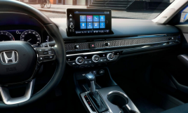

INÍCIO
Honda Civic 2023: Preço, Versões, Consumo, Motor, Itens e Ficha Técnica
Se você gosta de carros confortáveis e
com design impecável, precisa conhecer o novo Honda Civic
2023. Nesse sentido, vamos te apresentar os principais detalhes e informações sobre o Honda
Civic 2023. Confira!
O novo Honda Civic 2023
A princípio, a Honda divulgou algumas informações a respeito de seu novo carro, o Civic sedã versão 2023. Nesse sentido, a
apresentação oficial do veículo aconteceu em abril, no Salão de Xangai.
De acordo com algumas informações
divulgadas recentemente, é esperado que o novo sedã chegue com mudanças significativas ao mercado, por exemplo,
sendo um veículo híbrido.
Além disso, é esperado que o carro chegue ao Brasil somente por meio de
importação, vindo da Tailândia.
✔ Confira também, os maiores
lançamentos do ano:
 Fonte: Auto Esporte
Fonte: Auto Esporte
Ou seja, já podemos presumir que os preços ficarão mais elevados por conta desse aspecto. Se você ficou curioso, acompanhe a seguir alguns detalhes sobre o novo Honda Civic 2023.
Quantos quilômetros por litro faz um
Honda Civic?
A princípio, o sedã usa um conjunto de
motor 2.0 aspirado com uma
transmissão de dois motores elétricos que
operam de diversas formas, mas nunca em conjunto para tracionar o carro.
Na Tailândia, o modelo oferece cerca de 141 cv no motor 2.0 e 184 cv no conjunto elétrico, que pode ser
recarregado através do motor a combustão ou nas desacelerações.
De acordo com os dados, o Civic equipado
com o sistema e:HEV faz uma média de 20 km/l quando abastecido com gasolina.
Isso graças ao sistema híbrido pouco convencional, mas super eficiente. Nesse sentido, são três motores; um deles é o 2.0 de quatro cilindros a gasolina, que oferecem 140 cv e 18,9 kgfm e tração nas rodas dianteiras.
Enquanto isso, os outros dois são elétricos e resultam em 184 cv e 32,1 kgfm.
Consumo Honda Civic 2023
De antemão, não podemos negar que todos os motoristas buscam adquirir veículos que ofereçam bom desempenho e que sejam econômicos.
Nesse sentido, é muito importante analisar a relação de custo benefício de um carro antes de comprá-lo.
Fonte: Motor1A respeito do Honda Civic 2023, o carro oferece impressionantes 20 km/l, graças ao sistema híbrido e seus três motores.
Foto: HondaItens de série do
Civic
Atualmente, os itens de série de um veículo são muito importantes. Pois graças a eles temos um melhor desempenho no quesito segurança e funcionamento geral do novo Civic 2023.
 Fonte: Revista CarroA respeito dos itens e equipamentos do Civic 2023, veja abaixo alguns dos componentes que compõem o novo carro da Honda:
- Estrutura de deformação progressiva ACE (Advanced Compatibility Engineering);
- Alarme de segurança com imobilizador ECU;
- Freios com sistemas ABS e EBD (Anti-Lock Braking System / Electronic Brake Distribution);
- EBA (Emergency Brake Assist);
- Sistema HSA (Hill Start Assist – Assistente de partidas em aclive);
- Sistema AHA (Agile Handling Assist – Assistente de dirigibilidade ágil);
- Freio de estacionamento eletrônico;
- Iluminação do porta-luvas e nos espelhos;
- Sistema de monitoramento de pressão dos pneus (TPMS);
- Botão ECON e de travamento automático das portas (motorista e passageiro);
- Vidros elétricos com a função de subida automática;
- Comando elétrico de abertura interna do porta-malas (botão na porta do motorista), entre outros.
Qual o valor de um Honda Civic 2023?
A princípio, o novo Honda Civic não será produzido no Brasil. Nesse sentido, os interessados vão se deparar com preços mais altos devido à importação do veículo.
Desse modo, o modelo mais básico do Civic e é vendido a partir de U$41.895 nos Estados Unidos, cerca de R$230.000 em conversão direta. Contudo, é importante ressaltar que os valores podem variar, até porque o modelo será lançando em meados de janeiro de 2023.